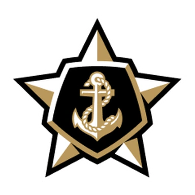

Салават Юлаев — Барыс итог матча 18 ноября
Статистика матча
- 27Броски в створ34
- 1 из 6Голы в большинстве2 из 7
- 1Голы в меньшинстве0
- 12Штрафные минуты14
- 6Удаления6
- 32Выигранные вбрасывания30
- 53 %Владение шайбой47 %
- 61Входы в зону атаки77
Удаления по минутам 12
- 1-й период
- Маккошен Иэн №3Удар клюшкой2 мин
- Шайхмедденов Ансар №77Грубость2 мин
- Симонов Семён №70Подножка2 мин
- Гуркин Ефим №49Подножка2 мин
- 2-й период
- Ефремов Владислав №65Подножка2 мин
- Морелли Мэйсон №11Игра высоко поднятой клюшкой2 мин
- Томпсон Тайс №9Подножка2 мин
- Логвин Всеволод №12Подножка2 мин
- 3-й период
- Жаровский Александр №97Подножка2 мин
- Цулыгин Ярослав №73Игра высоко поднятой клюшкой2 мин
- Педан Руслан №53Подножка2 мин
- Горшков Артём №13Подножка2 мин
Данные лиги.
- ТурнирКХЛ
Коротко о матче
Салават Юлаев — Барыс 5:3: хозяева победили.
По форме команды были близки: в пяти последних матчах Салават Юлаев — 3 победы, Барыс — 2 победы. Слабое место — оборона: Салават Юлаев — в среднем 3,0 пропущенной шайбы за игру в этих пяти матчах.
До этого команды встречались 10 января 2026 года: Салават Юлаев — Барыс 3:1.
Отдых и дорога
У хозяев 1 день отдыха, у гостей 2 дня отдыха.
 Салават Юлаевхозяева
Салават Юлаевхозяева
- 1день отдыха
- 3матча за 7 днейвключая этот
- 3-йдомашний матч подряд
- 0км перелётпрошлый матч — на этой же арене
Прошлый матч: 16.11, Салават Юлаев — Адмирал 6:5
 Барысгости
Барысгости
- 2дня отдыха
- 3матча за 7 днейвключая этот
- 1-йвыездной матч подряд
- 1 100км перелётбез смены часового пояса
Прошлый матч: 15.11, Барыс — Металлург 5:4
Перелёт — по прямой между городами прошлого и этого матча. Время отдыха считаем от начала прошлого матча.
Форма: последние матчи
Салават Юлаев 3 победы из 5
 В5:0
В5:0 В3:2
В3:2 П3:4
П3:4 П1:4
П1:4
В6:5
Барыс 2 победы из 5
 П1:2
П1:2- П4:5
 П0:2
П0:2- В4:2
 В5:4
В5:4
Кто в форме
Больше всего очков (голы + передачи) в последних матчах команды.
Салават Юлаевза 5 последних матчей
| Игрок | Г | П | О |
|---|---|---|---|
| Ремпал Шелдон | 3 | 4 | 7 |
| Жаровский Александр | 3 | 3 | 6 |
| Шипачёв Вадим | 3 | 3 | 6 |
| Родуолд Джек | 1 | 4 | 5 |
| Цулыгин Ярослав | 0 | 5 | 5 |
Барысза 5 последних матчей
| Игрок | Г | П | О |
|---|---|---|---|
| Бэйли Джастин | 4 | 1 | 5 |
| Приски Чейз Эванс | 1 | 4 | 5 |
| Морелли Мэйсон | 2 | 2 | 4 |
| Пилон Гарретт | 0 | 3 | 3 |
| Логвин Всеволод | 2 | 0 | 2 |
Дома и в гостях
Хозяева — в своих домашних матчах, гости — в выездных. Регулярный чемпионат этого сезона.
| Матчей | 13 | 16 |
|---|---|---|
| Побед | 6 из 13 | 8 из 16 |
| Забивают за игру | 2,8 | 2,7 |
| Пропускают за игру | 2,7 | 2,5 |
| Тотал больше 5,5 | 46% | 44% |
| Доходили до овертайма | 15% | 19% |
Жирным — лучшее из двух. Овертайм — с буллитами.
Вратари
Цифры за сезон. Кто выйдет в старте, клубы обычно объявляют только перед игрой.
Салават Юлаев
| Вратарь | И | Отражено | Пропуск. | На ноль |
|---|---|---|---|---|
| Вязовой Семён №35 | 24 | 91,7% | 2,48 | 3 |
| Бочаров Иван №60 | 6 | 87,3% | 3,53 | 1 |
| Богданов Никита В. №33 | 2 | 87,3% | 5,27 | 0 |
Барыс
| Вратарь | И | Отражено | Пропуск. | На ноль |
|---|---|---|---|---|
| Шутов Андрей А. №43 | 18 | 92,7% | 2,30 | 3 |
| Шепард Хантер №32 | 13 | 87,5% | 3,37 | 1 |
| Николаев Дмитрий Н. №72 | 10 | 92,8% | 2,20 | 0 |
Отражено — доля отражённых бросков. Пропуск. — пропущено шайб в среднем за игру.
Личные встречи
- Салават Юлаев3:1Барыс
- Салават Юлаев7:4Барыс
- Барыс2:1Салават Юлаев
- Барыс1:2Салават Юлаев
- Барыс1:4Салават Юлаев
- Салават Юлаев6:0Барыс
Положение в таблице
| Команда | Место | И | В | П | Голы | Очки |
|---|---|---|---|---|---|---|
| 6 | 28 | 14 | 14 | 84:85 | 30 | |
| 8 | 27 | 14 | 13 | 88:77 | 29 |
Куда дальше
Материалы носят информационный характер и не гарантируют результат. Реклама букмекеров на сайте не размещается. Сайт только для совершеннолетних (18+).